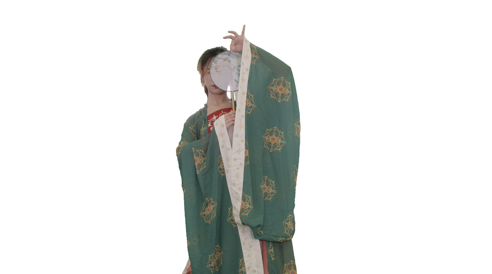
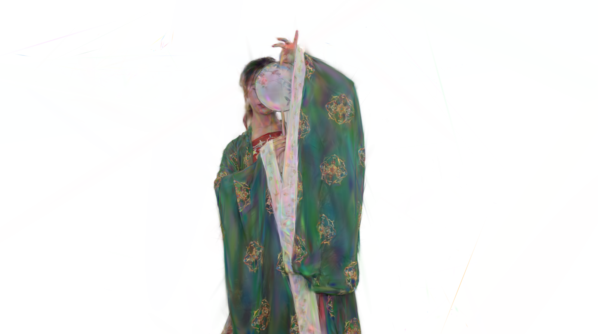
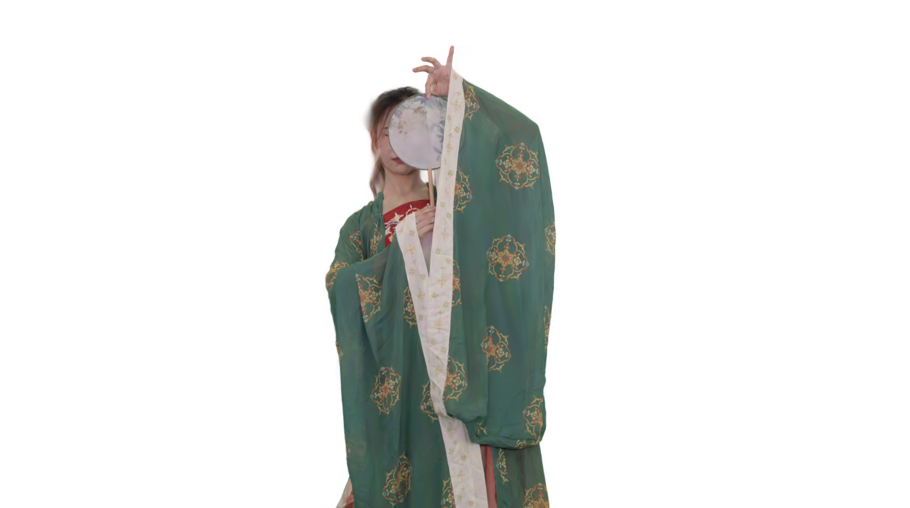
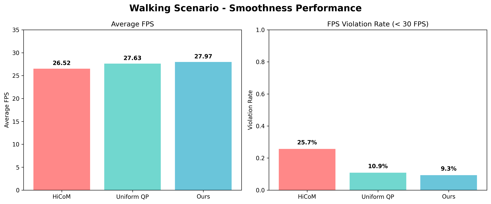

PrismGS: Coordinated Training and Compression for Pareto-Optimal 4D Gaussian Streaming
Shanghai Jiao Tong University
ACM MM 2026
Demo Video
Abstract
Dynamic 4D Gaussian scene streaming requires balancing visual quality, storage cost, and transmission bandwidth under rapidly changing network conditions. PrismGS addresses this problem with a coordinated training-and-compression pipeline that models the rate-distortion behavior of different Gaussian attribute groups and selects Pareto-optimal compression configurations for streaming. Instead of relying on a single uniform compression level, PrismGS performs attribute-aware allocation across geometry- and appearance-related components, enabling more effective bitrate use under bandwidth constraints.
Experimental Results
Qualitative comparisons on a representative dynamic scene. From left to right: Ground Truth, 3DGStream, 4DGC, HiCoM, V3, and PrismGS.



Streaming Performance
Example evaluation figure showing streaming smoothness under bandwidth variation.
